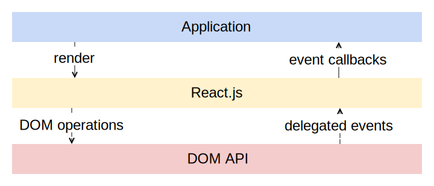

keep
calm
and
react
!
Qui suis-je ?
- Dev low-level, applications lourdes
- Dev web traditionnel puis SPAs / mobile
React c'est quoi ?
- Un outil développé chez Facebook
- Un framework client-side ? Non
- Le V de MVC ? Pas vraiment
- Une abstraction du DOM
React c'est quoi ?
Composant minimal
var html = React.DOM;
var Hello = React.createClass({
render: function() {
return html.p(null, 'Hello, ' + this.props.name + ' !');
}
});
React.renderComponent(Hello({ name: 'BordeauxJS' }), document.body);
Composition
We control complexity by establishing conventional interfaces that enable us to construct systems by combining standard, well-understood pieces in a "mix and match" way. We control complexity by establishing new languages for describing a design, each of which emphasizes particular aspects of the design and deemphasizes others.
Abelson & Sussman, Structure and Interpretation of Computer Programs
Composition
Un exemple simplevar html = React.DOM;
var Hello = React.createClass({
render: function() {
return html.p(null, 'Hello, ' + this.props.name + ' !');
}
});
var HelloBordeauxJS = React.createClass({
render: function() {
return html.div(
null,
Hello({ name: 'BordeauxJS' }) // <--
);
}
});
React.renderComponent(HelloBordeauxJS(), document.body);
Séparation données / état
De manière générale :- Données séparées de l'état de la vue
- Données fournies au composant et accessibles via
this.props - Etat du composant stocké dans
this.state
Séparation données / état
var html = React.DOM;
var ClickCounter = React.createClass({
getInitialState: function() {
return { clickCount: 0 }; // Etat initial
},
handleClick: function() {
this.setState({
clickCount: this.state.clickCount + 1 // Mise à jour de l'état lors d'un click
});
},
render: function() {
return html.button(
{ onClick: this.handleClick }, // Callback click du bouton
this.props.text + ' ' + this.state.clickCount // <--
);
}
});
React.renderComponent(ClickCounter({ text: 'Click me !' }), document.body);En coulisses : le Virtual DOM
Lors d'un changement d'état :- Rerender complet du DOM tree
- Diffing avec le tree précédent
- Génération du set de modifications minimal
- Mise à jour du DOM par batches
Les bénéfices du Virtual DOM
- Performances optimales
- DOM toujours synchro avec l'état des composants
- Raisonnement simplifié
Cycle de vie des composants
- render
- getInitialState, setState
- componentWillMount, componentWillUnmount, componentDidMount
- componentWillUpdate, componentDidUpdate
- shouldComponentUpdate, componentWillReceiveProps
- Vous savez tout !
Compatible avec les librairies et frameworks externes
- React peut ne s'occuper que d'une partie du DOM (Angular, Backbone, Ember ...)
- Une librairie peut gérer une partie du DOM sans interférence (D3, WebGL, canvas, plugin jQuery)
Pas de lock-in
- Unixy :
do one thing and do it well
- Modèle, routage, etc : libs externes
- Architecture libre (MVC go to hell)
- Encourage au découplage du code métier (durée de vie du code)
Où sont passés mes templates ??!
- Separation of languages !== Separation of Concerns
- Les modèles habituels mélangent données et états des vues ...
- et fournissent des primitives de templating pauvres ...
- ou bien réimplementent un sous-ensemble de javascript dans leur moteur de template
Où sont passés mes templates ??!
<ul>
<li ng-repeat="user in users">{{user.name}}</li>
</ul>Handlebars.registerHelper('if', function(conditional, options) {
if(conditional) {
return options.fn(this);
}
});Un préprocesseur optionnel : JSX
- Permet d'utiliser un langage proche du HTML au sein du code Javascript
/** @jsx React.DOM */
var Hello = React.createClass({
render: function() {
return <p>Hello, {this.props.name} !</p>;
}
});
var HelloBordeauxJS = React.createClass({
render: function() {
return (
<div>
<Hello name="BordeauxJS" />
</div>
);
}
});
React.renderComponent(<HelloBordeauxJS />, document.body);
Un préprocesseur optionnel : JSX
- Facilite la lecture et l'écriture de hiérarchies de composants
- Transformé en JS lintable
- Les numéros de lignes sont préservés
- Maintenance des composants + aisée pour les webdesigners
- Totalement optionnel
Pourquoi React ?
- Modèle de développement simple, facile à apprendre
- Charge cognitive légère : le code métier revient au coeur de l'appli
- Accessible à des développeurs peu expérimentés
- Moins de bugs, d'arrachages de cheveux, de WTF et d'heures à lire des docs
Mon expérience avec React
- Développement d'un appli client avec Backbone sur 6 mois
- Complexité = 0(nwtf)
- Découverte de React, sans conviction au départ
- Application réécrite avec React en 2 semaines
- Ajout de fonctionnalités en continu depuis, maintenance facile
Bilan
- Client qui passe de :/ à :D
- Je conserve une vision d'ensemble (simple) de l'application
- Le code est facilement maintenable, y compris par un tiers
- La durée de vie du code et sa valeur sont démultipliées
React en production ?
- Instagram (web) intégralement développé avec
- De plus en plus d'éléments de Facebook
- Khan Academy, New York Times, AirBnB, Atlassian ...
Quelques témoignages
React is awesome. It is the biggest change to how I approach web development that I can remember over the last 10+ years. It has made many things that used to be laborious and error-prone fun and robust.
Every time I finish up a React component, I'm blown away by how much simpler (and shorter) the code is compared to a traditional Backbone view — particularly when multiple subviews are involved.
I absolutely love React. It's small and does what it aims to do just great. You can probably learn React in an hour or two.
We started in Backbone, then migrated to Angular to mitigate nested view chaos. Latest rewrite drops Angular in favor of React and a bit of Backbone, mostly to reduce the learning curve for new devs. Using React for views is the simplest/most robust stack we've experienced. Easier to share/reuse code, easier to debug.
It is a serious paradigm shift [...] With React, my app got around x13 more performant.
Pour conclure
- Investissez une heure ou deux pour tester, vous ne le regretterez pas
- Un changement de paradigme ...
- Une nouvelle page dans le développement d'UIs navigateur
- Participez à l'écrire !